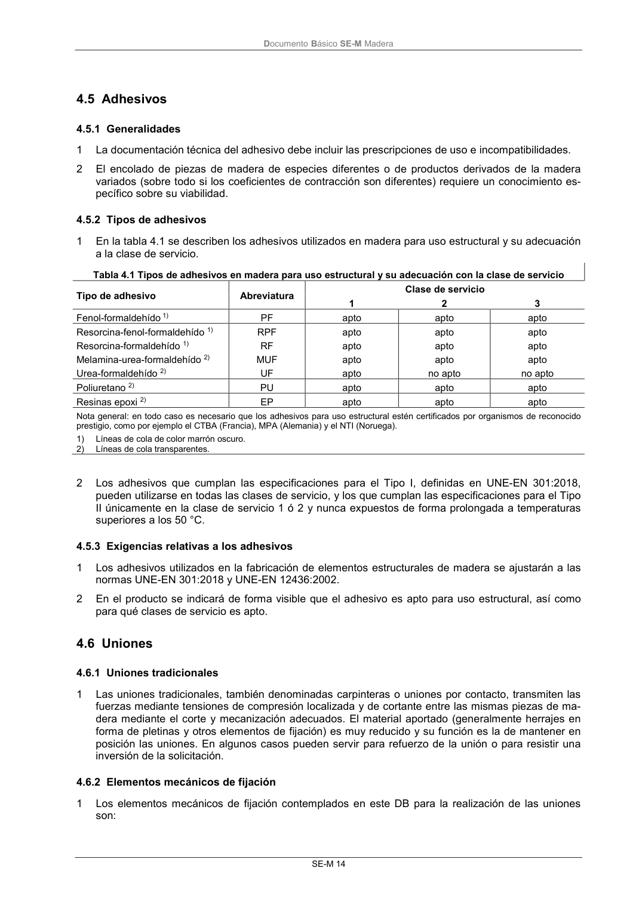

DB-SE-M · Fragmento de PDF p20 · versión 2019-12-20 · capa oficial
Formatos: JSON compacto · Markdown · PDF fuente
Ámbito del documento · texto del ámbito · documento y tablas
ID técnico a0047 · PDF pág. 20 · jerarquía no validada por persona · no es capítulo: sin_linea_de_encabezado · padre: raíz · literal original en el contenido: «4.5 Adhesivos 4.5.1 Generalidades»
4.5 Adhesivos 4.5.1 Generalidades 4.5.1 Generalidades 1 La documentación técnica del adhesivo debe incluir las prescripciones de uso e incompatibilidades. 2 El encolado de piezas de madera de especies diferentes o de productos derivados de la madera variados (sobre todo si los coeficientes de contracción son diferentes) requiere un conocimiento es- pecífico sobre su viabilidad.

PDF fuente redistribuible: copia fiel enlazada en esta página (SHA256 verificado).